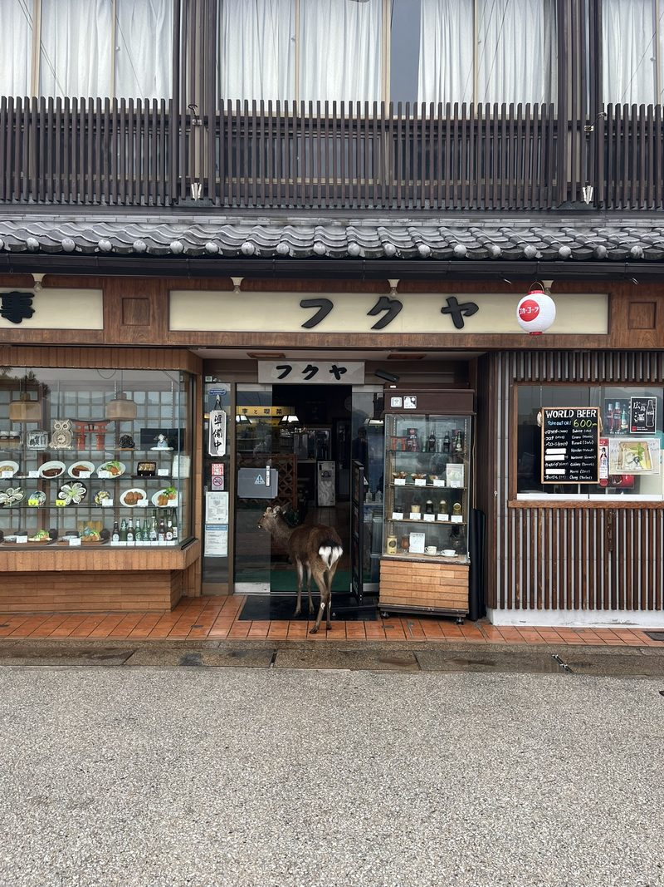
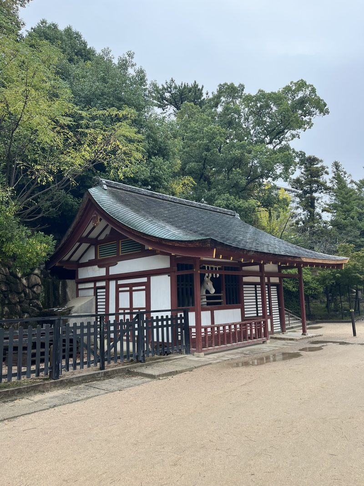

Het is een bijzonder eiland, Miyajima, met grote rotsige punten de hoogte in die erom vragen beklommen te worden. Hevige regenbuien gooien roet in het eten. De huisbaas waarschuwt voor een tyfoon, volgens Google valt het wel mee. Maar het water kómt in Japan, hoe dan ook weer een keer. Hoewel ik een goede band met water heb, en het verlangen dat het oproept om me er regelmatig onder te dompelen en een tijdje in een andere wereld te verkeren, drongen de gevaren ervan in 2011 pas echt binnen. De beelden van de tsunami die langzaam het nietig lijkende land overspoelde, alles op de weg meesleurend, maakten diepe indruk. Maar nog steeds kan mijn buik omhoog schieten van die mythologische golf die ergens op zee ontstaat, als een symbool van menselijke machteloosheid. Slechts één van de 1500 voelbare bevingen per jaar verwijderd.
De droom om wat komorebi – een soort meditatieve wandeling door een bos waarbij het zonlicht door de bladeren schijnt een unieke beleving losmaakt – te scoren, valt in ieder geval in het water. Het bos is er wel, maar het groen straalt de sfeer van een regenwoud uit. Ook prachtig. Overal herten, op de weg, in het bos, in de deuropening van winkeltjes. Er zijn rijke bossen die door de hoge temperaturen deze maand nog niet het verwachte rood hebben en we slingeren erdoorheen tot we op een kust stuiten, in potentie een tropisch strand. Rustgevend zijn de bamboe oesterplatformen die voor de kust kabbelen. Giftig voelt het piepschuim dat uit de boeien daarvoor is losgelaten en zich in duizenden korreltjes één heeft gemaakt met het zand en de hertenkeutels.


Prei-parathas
We pakken dagelijks een boemeltje terug naar Hiroshima. Het is een vintage trammetje met oud bordeauxrood besturingssysteem en uniformen die ogenschijnlijk naar zichzelf wijzen en roepen terwijl ze een halte naderen. Het food festival biedt honderden witte tentjes en nog veel meer bezoekers rond het centrale kasteel waar vooral veel vlezig vet uit de pannen gevist wordt. We zwelgen in rice cakes, aardappelstaafjes, prei-parathas, asperge/spek-sticks, sesame/red bean paste-ballen, bier, kimchi en smoothie.
Iedereen onder dezelfde doorzichtige paraplu. Het is weer om je te verstoppen in lunchplekjes en koffiehuisjes, bakkerijtjes, een bioscoop met oneindige beenruimte en knallende speakers. En zo wordt het een stad die aan me groeit, ook omdat ik me de verhalen eigen maak, terwijl de regen tegen de ramen tikt. Wat te denken van het hoofdstuk Yukio Mishima, onderdeel van een generatie zelfdodende auteurs, die als een van de laatste samoerai-aanhangers op een onvoorstelbare manier stierf tijdens een coup met een zwaard in zijn maag. En dat in schril contrast met de westers schrijvende Murakami, de eigenzinnige jazzman die me simpelweg ontroert, die de naoorlogse getraumatiseerde generatie een herkenbaardere stem gaf. Een zwijgende, conservatieve, ingehouden, bureaucratische generatie die zo botst met een generatie jongeren die zo in West-Europa zou kunnen wonen – de emotieloze uitdrukkingen op straat en in de metro richting een scherm komen overeen.
Het zijn wat flarden van de ervaringen. Ik ben nog nooit in zo’n eigenzinnig land geweest. Ik wil de taal kennen waardoor het ritme, de melodie en de poëzie van het proza echt tot hun recht komen. Ik wil naar Murakami’s literaire Tokyo. Het laatste avontuur, voor nu.